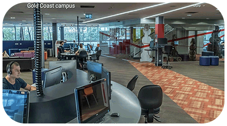
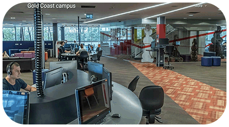

湖北财税·格里菲斯的中澳合作办学项目受教育部认可吗？
受到教育部认可。湖北省教育厅中外合作办学项目备案编号：鄂教审批函【2018】5号，教外司办学【2019】35号。
湖北财税·格里菲斯的中澳合作办学项目学生毕业生获得哪些学历证书？
合作办学项目学生可选择出国或不出国学习。
出国的学生在我校读完2年课程后赴澳大利亚格里菲斯继续完成2年且修满学分，毕业后获得湖北财税职业学院专科毕业证和澳大利亚格里菲斯大学本科学士学位。
不出国的学生在财税学院完成3年课程且修满学分，毕业后获得湖北财税职业学院专科毕业证。
以上毕业证书均受教育部认可。
湖北财税·格里菲斯的中澳合作办学项目后续有怎样的发展前景？
* 中国“专升本”模式（总时长5年）：在财税完成3年学习获得湖北财税职业学院专科毕业证后，参加国内专升本考试，录取后读2年本科可获本科学历。具体信息请学生在大三4/5月份时关注湖北省教育厅关于专升本的公告，湖北省教育厅每年会公布可专升本的院校名单、录取名额及考试细则，根据所报考专升本院校要求准备。
* 澳大利亚“专升本”模式（总时长4年）：在财税学院学习2年后出国，到澳大利亚格里菲斯学院继续学习2年修满学分后可获得湖北财税职业学院专科毕业证和澳大利亚格里菲斯大学本科学士学位。
* 澳大利亚“专升硕”模式（总时长5年）：在财税完成3年学习获得湖北财税职业学院专科毕业证后，可以进入澳大利亚格里菲斯大学一个学期的硕士预科学习（4门课），然后入读格里菲斯大学的硕士课程（1-2学年）。
* 澳大利亚“本升硕”模式（总时长5-6年）：获格里菲斯大学本科学位后，可继续升读硕士学位课程（1-1.5年）毕业后获澳大利亚格里菲斯大学硕士学位。
湖北财税·格里菲斯的中澳合作办学项目录取要求是什么？
达到专科录取分数线的应届高中毕业生或中职毕业生均可报名。欢迎广大学子报读我校中澳合作办学项目。
湖北财税·格里菲斯的中澳合作办学项目出国留学对学生英文有要求吗？
有。直入读格里菲斯学院英语水平需达到雅思总分5.5（听说读写单项5分）或完成格里菲斯学术英语EAP4。未达到要求的，可以在开始主修课之前配读相应的学术英语课程，完成后直接入读主修课程，无需再考雅思。
如何保证外教授课学生能听懂呢?
中澳合作办学项目学生的英语课为听力、阅读、口语、写作每项单独授课，学生在大一经过一年的英语强化后，综合水平会有很大提升。外教的专业课主要集中在第二学年完成，且每门课都会配有财税的教师辅导，帮助学生理解消化外教所授课程。每节外教课的PPT都会提前发给学生，以便学生提前预习并了解授课内容。每位学生都会获得外教课程的全部网络学习资源，包括参考书、外教课录像、作业解答等等。
学校也采取了一些有效措施来帮助学生上外教课，例如引入澳洲大学的学术英语，使学生的学术英语水平不断提高，进一步帮助学生听懂外教课。从现有的国际合作项目学生的学习情况看，一年以后学生基本上能大致听懂外教课。该项目班用大量的英语培训课替代了普通班的通识课程，从而更有效地利用了学生在校的学习时间。
国际班的学生到澳洲留学后在同一个班上吗？
不一定所有课程都在一个班。澳洲的大学采取学分制，同一专业的学生没有固定的班级。专业课程分为必修课与选修课，学生选择的课程不同，上课的时间也就不同。格里菲斯学院有三个学期，学生在2月、6月、10月均可入学。若学生在同一学期入学且选择了相同时间段的课程，则可以在一个班学习。
可以申请奖学金吗？
可以。湖北财税与格里菲斯学院为每届赴澳学生都设置了一定数额的奖学金，奖励每届学生中优秀学生赴澳留学。
澳大利亚格里菲斯大学怎么样？
格里菲斯大学是澳洲综合性公立大学，在QS（2025年）世界大学排名中格里菲斯大学居255位，参考同期排名的中国大学：武汉大学194，北京师范大学271，华中科技大学300）。
大学拥有六个校区，其中五个实体校区横跨风景宜人的布里斯班与黄金海岸，另设有一个数字校区。格里菲斯学科门类齐全，涵盖文学、理学、商学、教育学、工程学、医学、法学、艺术以及信息技术等十大学科领域300多门课程，专业课程体系丰富多彩。
澳洲格里菲斯大学的学费和生活费大约是多少？
格里菲斯大学一年（8门课）学费标准约A$35,000澳元/年，一年生活费约A$20,000-A$29,000澳元/年不等（具体费用因个人消费习惯和所在城市而异）。
（汇率1:4.6，请关注汇率波动，2025年3月）
项目学生赴澳需要申请澳洲签证吗?
需要。我校设有湖北财税·格里菲斯项目办公室，统一为项目学生提供一站式留学签证指导服务，确保材料完整，入学和签证申请有保障，无需面签。
澳大利亚生活环境安全吗？
澳大利亚是一个发达的现代化工业国家，是南半球经济最发达的国家之一。澳大利亚气候宜人，自然风景优美，社会环境安定，是全世界枪支管制最严格的国家之一，犯罪率低。同时，它也是一个多元文化的大熔炉，是世界上最安全的国家之一。
澳洲读书期间可以打工吗?
持有学生签证的留学生可在学期期间每两周工作最多48小时，假期无限制。澳大利亚拥有英美澳国家中最高的最低时薪，当前政府规定的最低工资为每小时24.10澳元。学生在不影响学业的情况下可从事兼职工作，不仅能贴补平时的消费，也能锻炼自己的英语口语交流能力，更好地融入当地环境。
毕业后有留澳工作或移民机会吗？
有。在澳大利亚格里菲斯大学完成至少2个学年并获得本科或硕士学位后，可申请2-3年留澳工作签证。澳大利亚是多元文化的移民国家，留学生亦有资格申请移民澳洲。财税学院格里菲斯项目办公室将指导和帮助学生申请签证。


 
